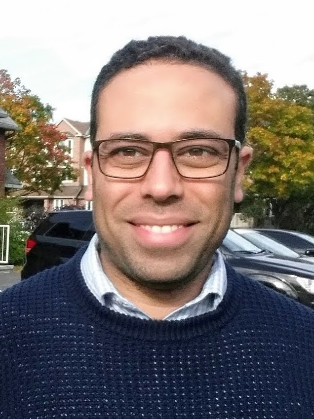

Brief Bio
I joined the University of Saskatchewan in July 2019 as an Assistant Professor. Before joining USask, I was an Assistant Professor (Lecturer UK) in the School of Engineering, Ulster University, Northern Ireland and a postdoctoral fellow at Carleton University, Ottawa, ON, Canada, and the University of British Columbia (UBC), Kelowna, BC. I received the Ph.D. degree (Distinction) in October 2014 from Memorial University of Newfoundland, St. John's, NL, Canada.
My research interests include wireless communications, signal processing, detection and estimation theory, optimization, application of artificial intelligence in communications.
Selected Honors and Awards
- 2024Provost’s College Teaching Award
- 2024Teaching Excellence Award, University of Saskatchewan Student Union (USSU)
- 2024, 2023Exemplary Editor, IEEE Open Journal of the Communications Society
- 2023Exemplary Editor, IEEE Wireless Communications Letters
- 2021, 2016Exemplary Reviewer, IEEE Wireless Communications Letters
- 2017Exemplary Editor, IEEE Communications Letters
- 2017, 2016Exemplary Reviewer, IEEE Communications Letters
Available Research Positions
Positions are available for self-motivated Ph.D. students with a strong background in mathematics. Please send me your resume, transcripts, and publications (if any). I will get back to you should further information is needed.
Quick Links
150+ peer-reviewed papers in top venues
15 active members including PhD students and postdocs
Funded research in AI, ML, and computer vision
Courses in machine learning and computer vision